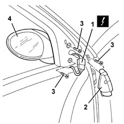

7005R30 electrically controlled door mirror (one) - r+r
- Path
- Procedures > 70 FITTINGS > 7005 PASSENGER COMPARTMENT FRONT SIDE DOORS > 7005R front door mirrors > 7005R30 electrically controlled door mirror (one) - r+r
- Kind
- repair procedure (removal / refitting; the operation number is the code)
- Applies to
- all engines; all production periods
- Interactive page
- https://sloeber94.github.io/elrnDB-a147/en/#/3025685
Applies to: all engines; all production periods
 Removing
Removing
 Refitting
Refitting7005E12 corner cover of one front side door, lh or rh r r
1. Disconnect the electrical connections for the door mirror.
 | Name | Connector |
|---|---|---|
1 | Driver's external rear view mirror |
| Name | Connector |
|---|---|---|
1 | Exterior passenger side rear view mirror |
2. Remove the sound inslation.
3. Undo the bolts securing the door mirror.
4. Remove the door mirror.

Applies to: all engines; all production periods
Refitting
RemovingCheck that the door mirror is not damaged.
Fit the door mirror and tighten its bolts.
Place the sound insulation in position.
Connect the electrical connection
Check that the door mirror is working properly.
Topics linked from this page (3)
- 7005E12 corner cover of one front side door, lh or rh r r
- P60 Driver's external rear view mirror
- P61 Exterior passenger side rear view mirror
Topics that link to this page (8)
- J20 REARSCREEN AND DOOR MIRROR DEFROSTING NOT WORKING
- J22 DOOR MIRROR DEFROSTING NOT WORKING
- 5010D12 outside air temperature sensor on door mirror - r+r following electrical circuit check
- 7005D18 front side door descending window glass channel r r
- 7005R35 door mirror reflector - r r
- 7005R36 door mirror motor - r r
- 7005R37 door mirror boot - r r
- 7205E36 Stripping FRONT SIDE DOOR